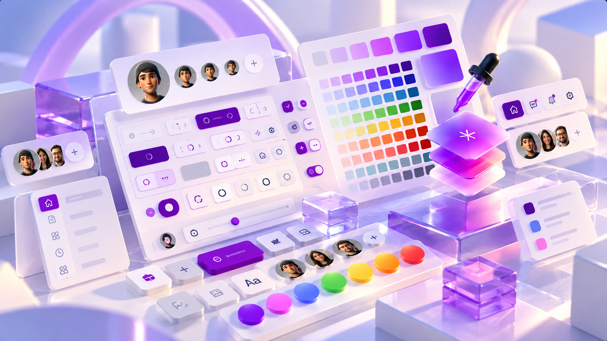
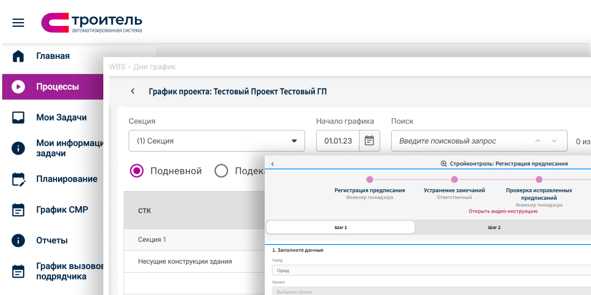
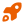
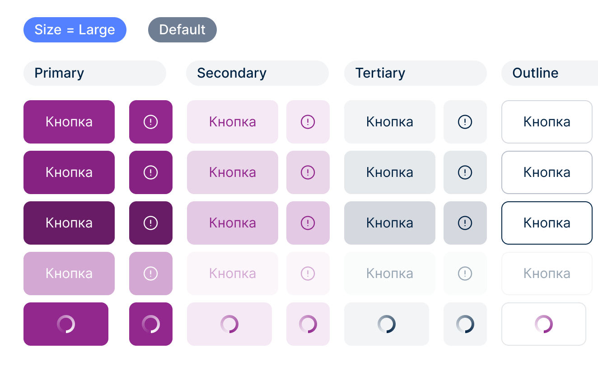
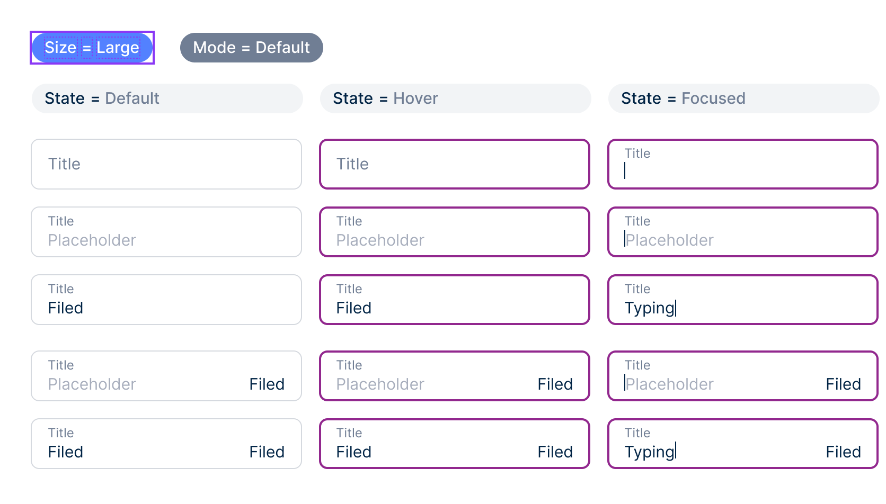
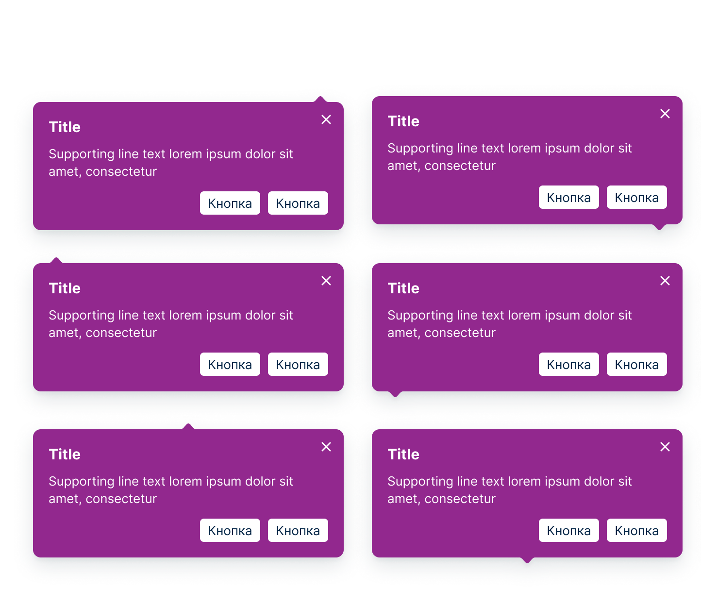
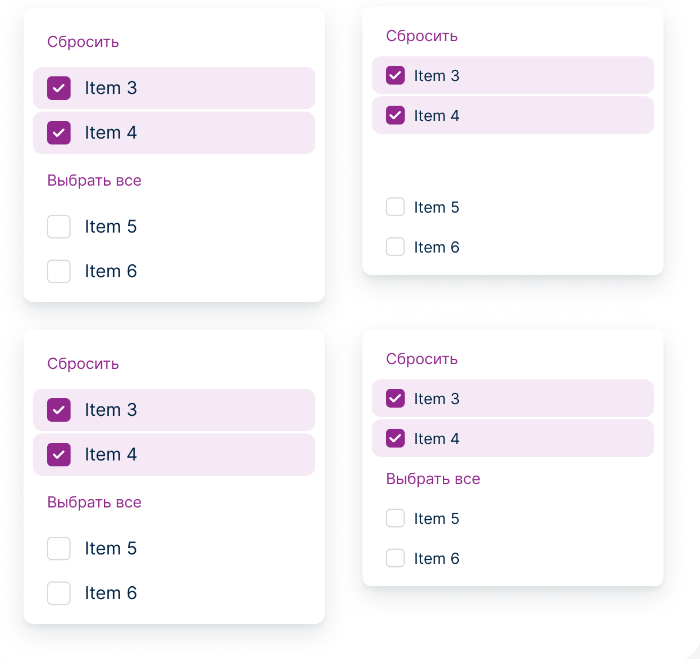
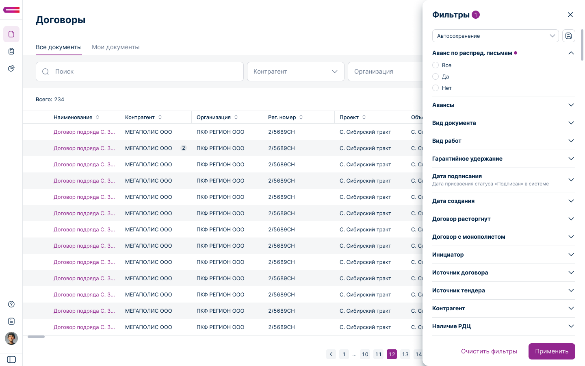
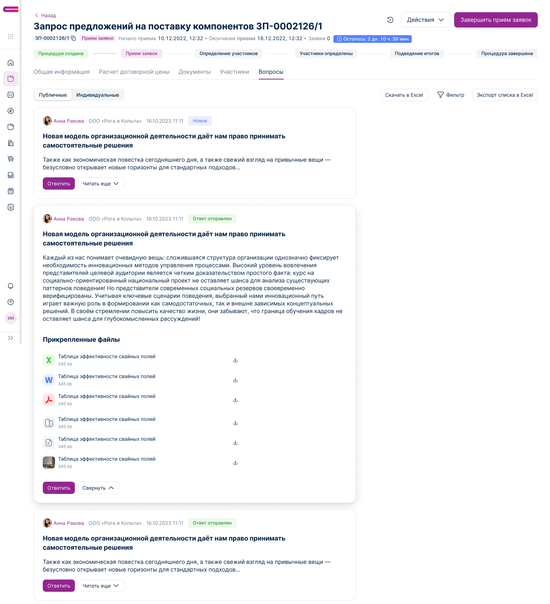

Задача
Создать единую дизайн-систему с нуля для нескольких цифровых продуктов и объединить разрозненные интерфейсы в общую систему.
01
Создал и внедрил единую дизайн-систему для 17 цифровых продуктов компании — от архитектуры и токенов до компонентов и интеграции в продукты.

17
продуктов
100+
компонентов
2
платформы
3 месяца
до внедрения
Создать единую дизайн-систему с нуля для нескольких цифровых продуктов и объединить разрозненные интерфейсы в общую систему.
Продуктовый дизайнер и автор системы: определил архитектуру, спроектировал токены и компоненты, сформировал правила использования и подготовил документацию для внедрения.
Система была спроектирована и внедрена за 3 месяца и использовалась в Web и iOS-продуктах. Команды получили единую основу для проектирования и разработки интерфейсов.
01
Компания развивала несколько цифровых продуктов, но интерфейсы постепенно расходились: разные подходы к компонентам, стилям и поведению элементов усложняли поддержку и замедляли разработку. Задача — собрать эти решения в единую масштабируемую систему, которая работает сразу на нескольких платформах.

02
Провёл аудит существующих интерфейсов и определил ключевые проблемы. На основе анализа сформировал архитектуру дизайн-системы, спроектировал токены и библиотеку компонентов, подготовил документацию и сопровождал внедрение вместе с командами разработки.
Анализ
и аудит
Принципы
и архитектура
Компоненты
и гайдлайны

Внедрение
и поддержка
03
Спроектировал архитектуру дизайн-системы на основе токенов — цветов, типографики, отступов, теней и других базовых свойств. Такая структура позволила использовать единые принципы на Web, iOS и масштабировать систему без дублирования решений.
Дизайн-токены
Цвета
Типографика
AaAaAa
Отступы
Тени
04
Спроектировал 100+ переиспользуемых компонентов — от базовых элементов интерфейса до сложных виджетов и паттернов. Для компонентов определил состояния, варианты, правила использования и взаимодействие между элементами.




05
Дизайн-система была внедрена в 17 цифровых продуктов компании. Единые компоненты, токены и принципы позволили сохранить общий визуальный язык разных продуктовых сценариев.
17 продуктов · 100+ компонентов · 3 месяца

